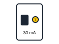
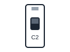
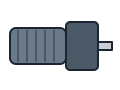
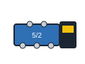

2The big picture
Four groups of parts, from left to right. Power flows from group 1 to group 2. The PLC (group 3) reads the senses and drives the muscles (group 4).
1Power in
Brings 230 V in and protects it.
230 V wall supply
Main switch Q0

RCBO F0 (30 mA)
Breakers F1–F62Power supplies
Make safe low voltages.
24 V: PLC, sensors, valves
36 V: stepper motors
5 V: Raspberry Pi, ESP32
24 V (G4): gear motors
3Brain and senses
Reads, decides, shows.
Touch screen
Encoder, photocells
2 thermocouples
Camera (Raspberry Pi)
4Muscles
Do the work.

2 gear motors3 heaters

12 air valvesSafety circuit around everythingEmergency stop + guard door → safety relay K0 → contactor KM1. It cuts the motors, heaters and valves without waiting for the PLC. See part 6.